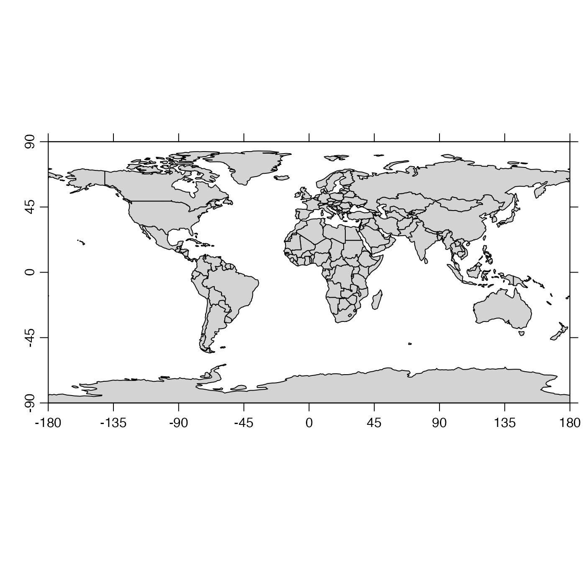

This function plots a coastline. An attempt is made to fill the space of the plot, and this is done by limiting either the longitude range or the latitude range, as appropriate, by modifying the eastern or northern limit, as appropriate.
# S4 method for coastline
plot(
x,
xlab = "",
ylab = "",
showHemi = TRUE,
asp,
clongitude,
clatitude,
span,
lonlabels = TRUE,
latlabels = TRUE,
projection = NULL,
expand = 1,
mgp = getOption("oceMgp"),
mar = c(mgp[1] + 1, mgp[1] + 1, 1, 1),
bg,
fill,
type = "polygon",
border = NULL,
col = NULL,
axes = TRUE,
cex.axis = par("cex.axis"),
add = FALSE,
inset = FALSE,
geographical = 0,
longitudelim,
latitudelim,
debug = getOption("oceDebug"),
...
)a coastline object.
label for x axis
label for y axis
logical indicating whether to show the hemisphere in axis tick labels.
Aspect ratio for plot. The default is for plot,coastline-method
to set the aspect ratio to give natural latitude-longitude scaling somewhere
near the centre latitude on the plot. Often, it makes sense to set
asp yourself, e.g. to get correct shapes at 45N, use
asp=1/cos(45*pi/180). Note that the land mass is not symmetric about
the equator, so to get good world views you should set asp=1 or set
ylim to be symmetric about zero. Any given value of asp is
ignored, if clongitude and clatitude are given (or
if the latter two are inferred from projection.
optional center latitude of map, in decimal
degrees. If both clongitude and clatitude are provided,
or alternatively if they can be inferred from substrings +lon_0
and +lat_0 in projection, then
any provided value of asp is ignored, and instead the plot aspect
ratio is computed based on the center latitude. If clongitude and
clatitude are known, then span must also be provided, and
in this case, it is not permitted to also specify longitudelim and
latitudelim.
optional suggested diagonal span of the plot, in kilometers.
The plotted span is usually close to the suggestion, although the details
depend on the plot aspect ratio and other factors, so some adjustment may be
required to fine-tune a plot. A value for span must be supplied, if
clongitude and clatitude are supplied
(or inferred from projection).
optional vectors of longitude and latitude to
label on the sides of plot, passed to mapPlot() to control
axis labelling, for plots done with map projections (i.e. for
cases in which projection is not NULL).
optional map projection to use (see
the mapPlot() argument of the same name).
If set to FALSE then no projection is used,
and the data are plotted in a cartesion frame, with aspect ratio set to
reduce distortion near the middle of the plot. This option is useful if the
coastline produces spurious horizontal lines owing to islands crossing the
plot edges (a problem that plagues map projections). If projection
is not set, a Mercator projection is used for latitudes below about 70
degrees, as if projection="+proj=merc" had been supplied, or a
Stereopolar one is used as if projection="+proj=stere". Otherwise,
projection must be a character string identifying a projection
accepted by mapPlot().
numerical factor for the expansion of plot limits, showing
area outside the plot, e.g. if showing a ship track as a coastline, and then
an actual coastline to show the ocean boundary. The value of expand
is ignored if either xlim or ylim is given.
3-element numerical vector to use for par("mgp"), and also
for par(mar), computed from this. The default is tighter than the R
default, in order to use more space for the data and less for the axes.
value to be used with par("mar").
optional color to be used for the background of the map. This comes in handy for drawing insets (see “details”).
a legacy parameter that will be permitted only temporarily; see “History”.
indication of type; may be "polygon", for a filled polygon,
"p" for points, "l" for line segments, or "o" for points
overlain with line segments. See color for a note on how
the the value of type alters the meaning of the color
argument.
color used to indicate land (if type="polygon") or
the coastline and international borders (if type="l").
either the color for filling polygons (if type="polygon")
or the color of the points and line segments (if type="p",
type="l", or type="o").
boolean, set to TRUE to plot axes.
value for axis font size factor.
boolean, set to TRUE to draw the coastline on an existing
plot. Note that this retains the aspect ratio of that existing plot, so it
is important to set that correctly, e.g. with asp=1/cos(lat * pi /
180), where clat is the central latitude of the plot.
set to TRUE for use within plotInset(). The
effect is to prevent the present function from adjusting margins, which is
necessary because margin adjustment is the basis for the method used by
plotInset().
flag indicating the style of axes. With
geographical=0, the axes are conventional, with decimal degrees as
the unit, and negative signs indicating the southern and western
hemispheres. With geographical=1, the signs are dropped, with axis
values being in decreasing order within the southern and western
hemispheres. With geographical=2, the signs are dropped and the axes
are labelled with degrees, minutes and seconds, as appropriate, and
hemispheres are indicated with letters. With geographical=3, things
are the same as for geographical=2, but the hemisphere indication
is omitted. Finally, with geographical=4, unsigned numbers are used,
followed by letters N in the northern hemisphere, S in the southern,
E in the eastern, and W in the western.
this and latitudelim provide a second way to
suggest plot ranges. Note that these may not be supplied if
clongitude, clatitude and span are given.
see longitudelim.
set to TRUE to get debugging information during
processing.
optional arguments passed to plotting functions. For example,
set yaxp=c(-90,90,4) for a plot extending from pole to pole.
None.
If longitudelim, latitudelim and projection are all given,
then these arguments are passed to mapPlot() to produce the plot.
(The call uses bg for col, and uses col, fill
and border directly.) If the results need further customization,
users should use mapPlot() directly.
If projection is provided without longitudelim or latitudelim,
then mapPlot() is still called, but longitudelim and
latitudelim are computed from clongitude, clatitude and span.
If projection is not provided, much simpler plots are produced. These are
Cartesian, with aspect ratio set to minimize shape distortion at the central latitude.
Although these are crude, they have the benefit of always working, which cannot
be said of true map projections, which can be problematic in various ways owing
to difficulties in inverting projection calculations.
To get an inset map inside another map, draw the first map, do
par(new=TRUE), and then call plot,coastline-method() with a value of
mar that moves the inset plot to a desired location on the existing
plot, and with bg="white".
Until February, 2016, plot,coastline-method relied on a
now-defunct argument fill to control colors; col is to be
used now, instead.
The documentation for the coastline class explains the structure of coastline objects, and also outlines the other functions dealing with them.
Other functions that plot oce data:
download.amsr(),
plot,adp-method,
plot,adv-method,
plot,amsr-method,
plot,argo-method,
plot,bremen-method,
plot,cm-method,
plot,ctd-method,
plot,gps-method,
plot,ladp-method,
plot,landsat-method,
plot,lisst-method,
plot,lobo-method,
plot,met-method,
plot,odf-method,
plot,rsk-method,
plot,satellite-method,
plot,sealevel-method,
plot,section-method,
plot,tidem-method,
plot,topo-method,
plot,windrose-method,
plot,xbt-method,
plotProfile(),
plotScan(),
plotTS(),
tidem-class
Other things related to coastline data:
[[,coastline-method,
[[<-,coastline-method,
as.coastline(),
coastline-class,
coastlineBest(),
coastlineCut(),
coastlineWorld,
download.coastline(),
read.coastline.openstreetmap(),
read.coastline.shapefile(),
subset,coastline-method,
summary,coastline-method
# \donttest{
library(oce)
par(mar=c(2, 2, 1, 1))
data(coastlineWorld)
plot(coastlineWorld)

plot(coastlineWorld, clongitude=-63.6, clatitude=44.6, span=1000)
## Canada in Lambert projection
plot(coastlineWorld, clongitude=-95, clatitude=65, span=5500,
grid=10, projection='+proj=laea +lon_0=-100 +lat_0=55')
# }